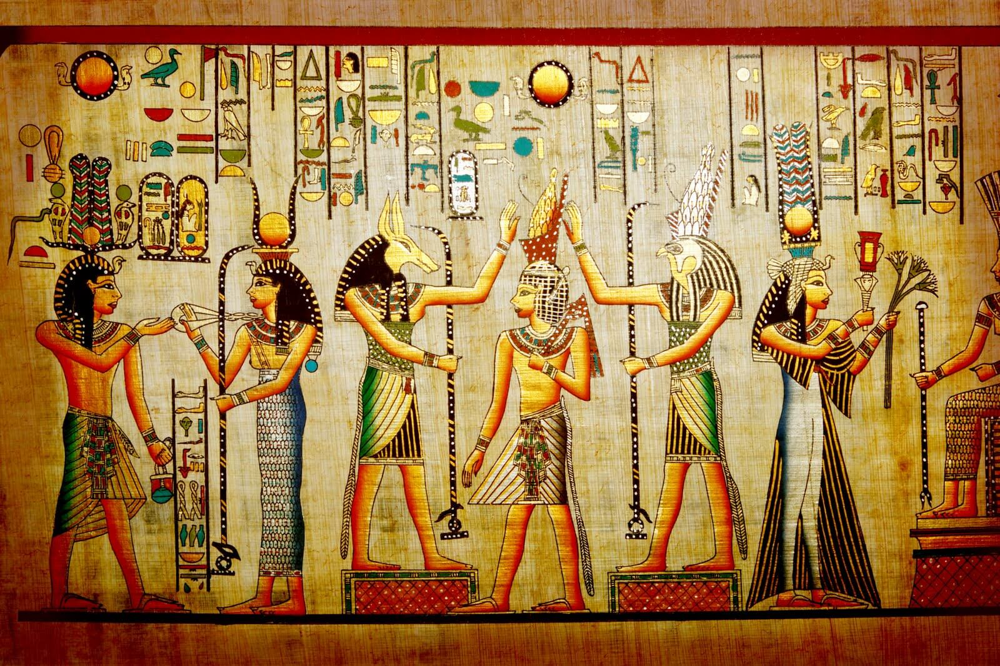
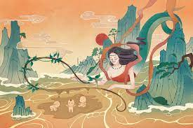

Existen tales como...
Mitologia Nordica

La mitología nórdica es un conjunto de creencias y narrativas que provienen de las culturas vikingas y escandinavas en la región nórdica, que incluye países como Noruega, Suecia, Dinamarca e Islandia. Esta mitología se desarrolló durante la era vikinga, entre los siglos VIII y XI. En la mitología nórdica, se encuentran diversas deidades, seres míticos y héroes, cada uno con su propio papel en la cosmología y la naturaleza. Los dioses nórdicos ocupan una posición importante y son adorados por su poder y capacidad para influir en los fenómenos naturales y la vida de los humanos.
Algunos de los principales dioses nórdicos incluyen:
Odin: El padre de todos los dioses, gobernante de Asgard y dios de la sabiduría, la guerra y la muerte.
Thor: El poderoso dios del trueno y protector de los dioses y los humanos, conocido por su martillo mágico, Mjölnir.
Freyja: La diosa del amor, la belleza, la fertilidad y la guerra.
Loki: El astuto dios de la travesura y la astucia, conocido por su papel ambivalente como aliado y enemigo de los dioses.
Mitologia Egipcia
La mitología egipcia es un sistema de creencias y relatos que se desarrolló en el antiguo Egipto y abarca miles de años de historia. Los egipcios adoraban a una gran cantidad de dioses y diosas, cada uno con atributos y funciones específicas. La mitología egipcia estaba intrínsecamente relacionada con la vida cotidiana, las prácticas religiosas y la concepción del mundo y el más allá.
Algunos de los principales dioses y diosas de la mitología egipcia incluyen:
Ra (Re): El dios del sol, considerado el dios supremo y creador. Ra recorría el cielo durante el día y descendía al inframundo por la noche.
Osiris: Dios del más allá y la resurrección. Era el dios de la vida después de la muerte y el juicio de los difuntos.
Isis: Esposa de Osiris y diosa de la maternidad, la magia y la protección.
Anubis: Dios de la muerte y el embalsamamiento, encargado de guiar a las almas al más allá.
Horus: Dios del cielo y el rey de los dioses. También era el patrón de los faraones.
Además de los dioses, la mitología egipcia incluye criaturas míticas como el Ave Fénix, el Escarabajo Sagrado y el Dios con Cabeza de Animal, entre otros.
Mitologia China
La mitología china es un sistema de creencias y leyendas que ha evolucionado a lo largo de miles de años en la antigua China. Se caracteriza por su rica colección de dioses, héroes, espíritus y criaturas míticas. La mitología china está profundamente arraigada en la cultura china y ha influido en diversas áreas de la vida, como la religión, la literatura, el arte y la medicina tradicional.
Algunos de los principales dioses y figuras míticas de la mitología china incluyen:
Pangu: Se le atribuye la creación del mundo. Según la leyenda, Pangu separó el cielo y la tierra y luego creció durante miles de años para sostener el cielo y separarlos aún más.
Nuwa: Es una diosa creadora y hermana de Pangu. Se le atribuye haber creado a la humanidad y haber arreglado el cielo después de que Pangu lo separara.
Yandi y Huangdi: Conocidos como Emperador Yan y Emperador Huang, respectivamente, son considerados los ancestros de las etnias Han y Han-Yue en la mitología china.
Quetzalcóatl: El dios-serpiente emplumado, asociado con el viento, la sabiduría y la fertilidad.
Zhu Rong: Dios del fuego y de la guerra.
Además de los dioses, la mitología china incluye una gran variedad de criaturas míticas y seres sobrenaturales, como el dragón, el fénix, el qilin (una criatura similar al unicornio), el hombre-pájaro Garuda, entre otros.